На плане есть ID
Инженер работает в AutoCAD и расставляет проектные блоки: устройство, помещение, кабель, высота, точка подключения.
Программа связывает DWG-план, щит, кабельный журнал, автоматику Wiren Board, блоки питания, LED-ленты, спецификацию и быстрый доступ к данным в одну рабочую модель проекта.
AutoCAD остаётся чертежом.
Excel остаётся форматом выдачи.
Внутри программы проект, щит, контроллер и бот опираются на одну и ту же базу связей: линии, автоматы, модули, питание и оборудование.
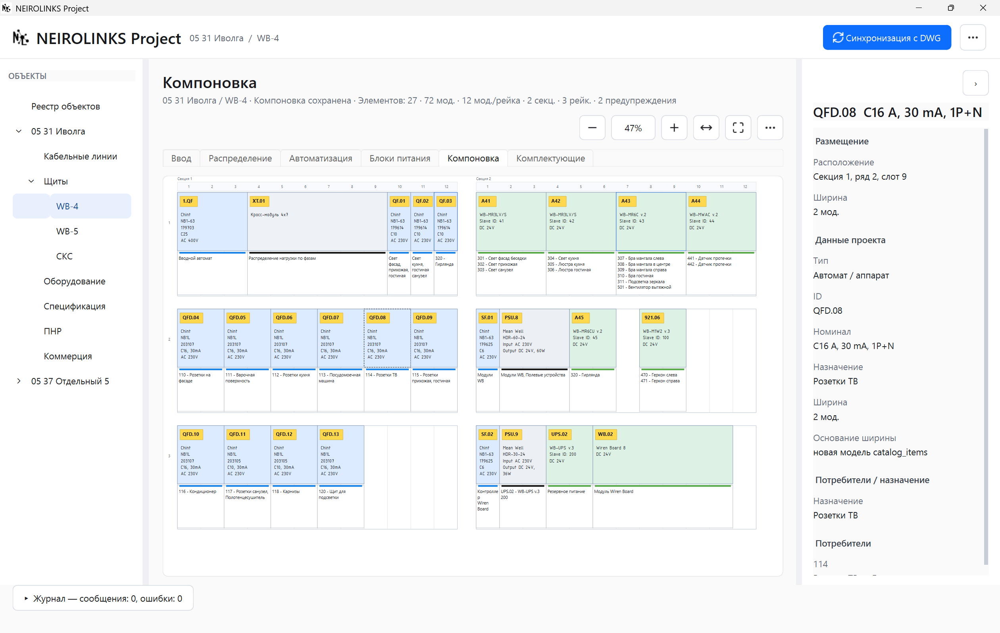
Раньше тоже можно было работать вручную. Проблема не в том, что AutoCAD и Excel плохие. Проблема в связях, которые приходится удерживать в голове и переносить между документами.
Добавили линию — её нужно не забыть в журнале. Поменяли щит — нужно проверить автоматы. Перенесли нагрузку — нужно проверить канал модуля. Добавили LED-ленту — нужно проверить блок питания, длину, остаток катушки и спецификацию.
NEIROLINKS Project нужен не для того, чтобы “рисовать красивее”. Он нужен, чтобы проектные связи были видны в одном месте.
Одна линия может одновременно относиться к плану, кабельному журналу, автомату, модулю, каналу, блоку питания, спецификации и будущей наладке.
Инженер работает в AutoCAD и расставляет проектные блоки: устройство, помещение, кабель, высота, точка подключения.
Из DWG считываются ID, типы устройств, помещения, кабели, нагрузки и связи. Данные попадают в локальную базу проекта.
Линия связывается со щитом, автоматом, модулем Wiren Board, каналом, питанием и оборудованием.
Из модели формируются таблицы и документы для монтажа, сборки щита, закупки и наладки.
Одна строка на плане проходит через несколько представлений проекта.
DWG: светильник 306 на плане Кабельный журнал: WB-4 → 306 → Гостиная → Люстра гостиная Кабель: ВВГнг(А)-LS 3x1,5 Автоматизация: A42/K3 Распределение: QF.01 группа освещения в щите WB-4 Выдача: Excel / PDF / спецификация
Программа не заменяет AutoCAD. Она использует проектные блоки, ID и атрибуты как входные данные для модели проекта.
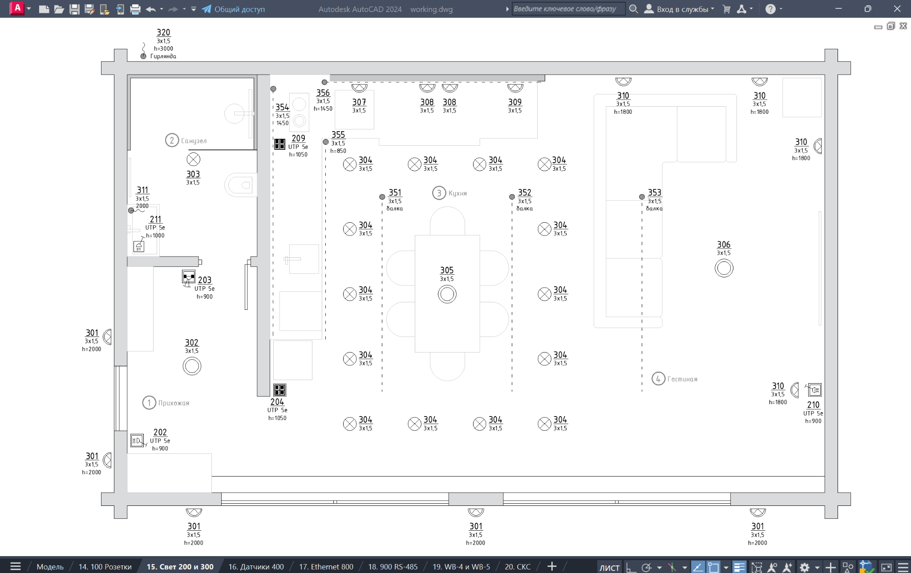
Текущие рабочие функции NEIROLINKS Project.
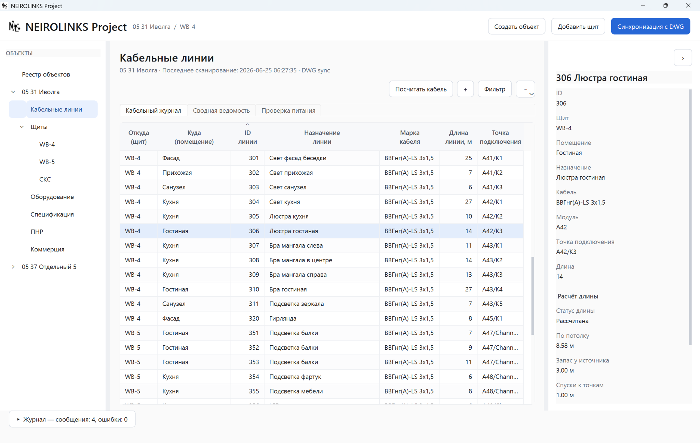
Показывает щит, помещение, ID линии, назначение, кабель, длину и точку подключения.
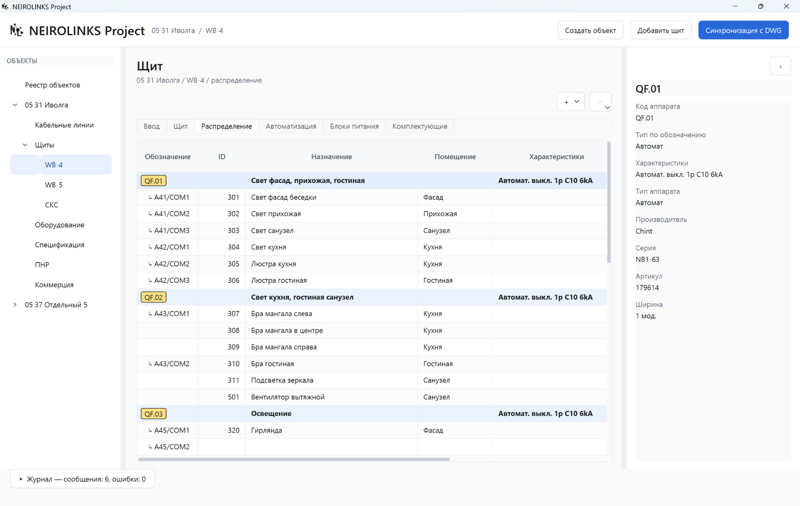
Группирует потребители по аппаратам защиты и показывает характеристики выбранного автомата.
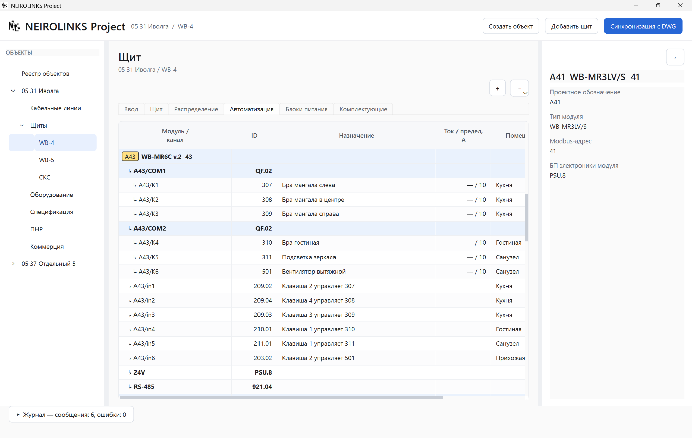
Показывает модули, COM-группы, выходы, входы, питание 24 В и RS-485 в одной структуре.
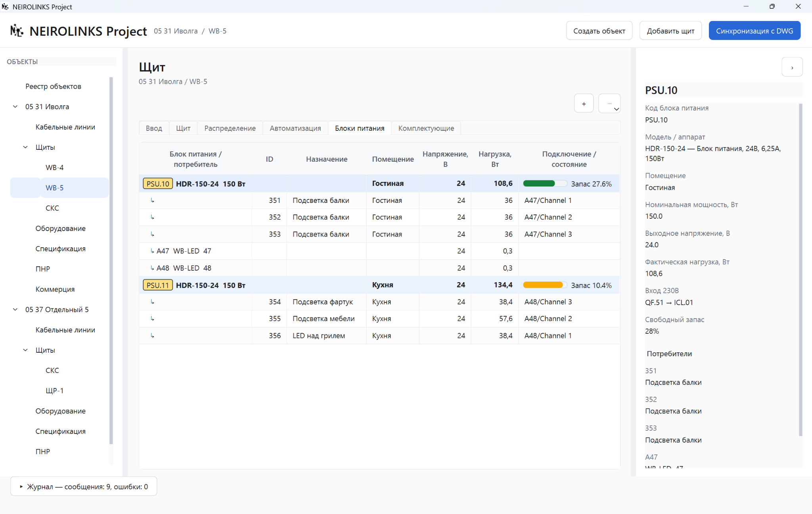
Отдельно ведёт DC-питание: напряжение, нагрузку, запас, потребителей и вход 230 В.
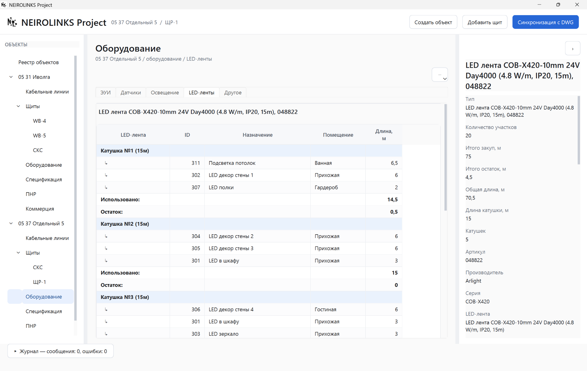
Считает участки, катушки, закупку, остатки, общую длину и привязку к линиям.
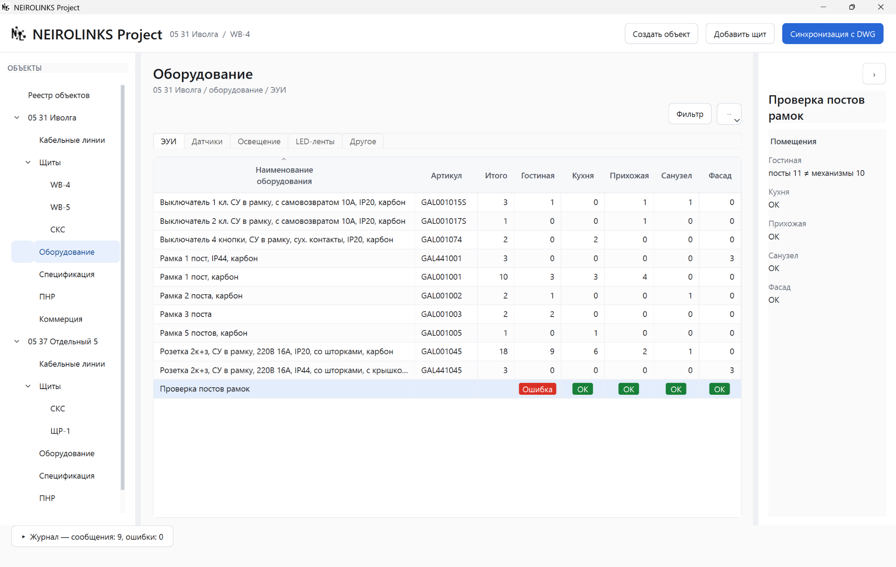
Показывает комплектацию по помещениям и проверяет совпадение постов рамок с механизмами.
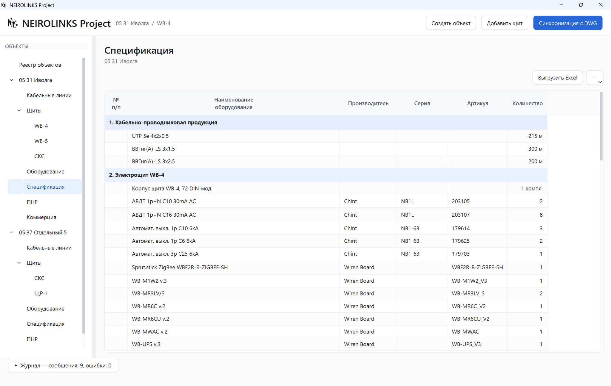
Собирает кабель, щитовое оборудование, WB-модули, блоки питания, датчики, ЭУИ и LED-ленты.
Показывает DIN-компоновку: автоматы, модули Wiren Board, БП и подписи линий.
Проверки нужны не для красивого отчёта. Они показывают места, где проектная связь не завершена или противоречит модели.
Excel и PDF остаются нормальным форматом передачи смежникам. Разница в том, что они формируются из модели, а не собираются вручную как отдельная жизнь проекта.
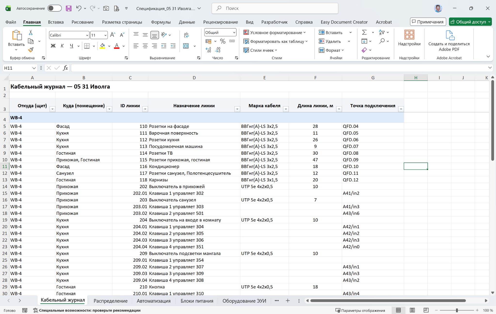
Таблица для монтажа: щит, помещение, ID, назначение, кабель, длина и подключение.
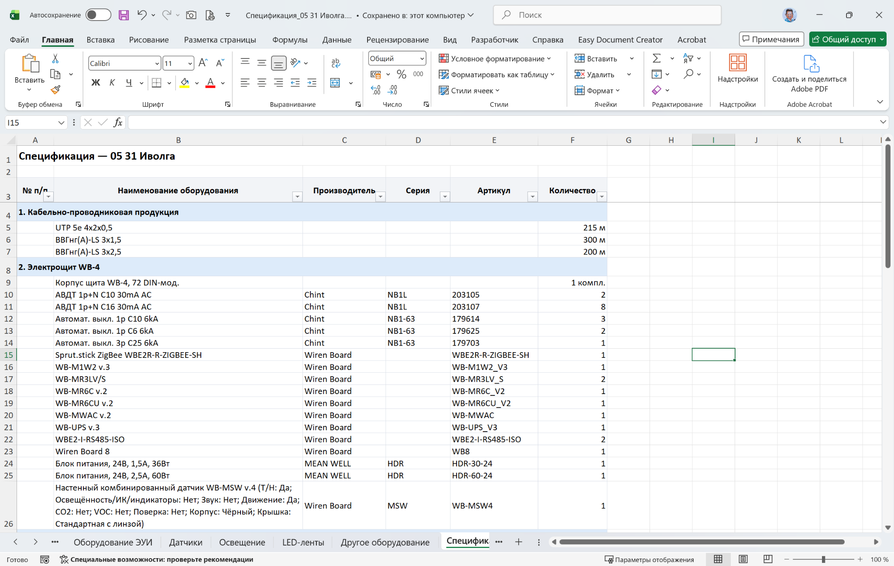
Сводная закупочная ведомость по кабелю, щиту, Wiren Board и оборудованию.
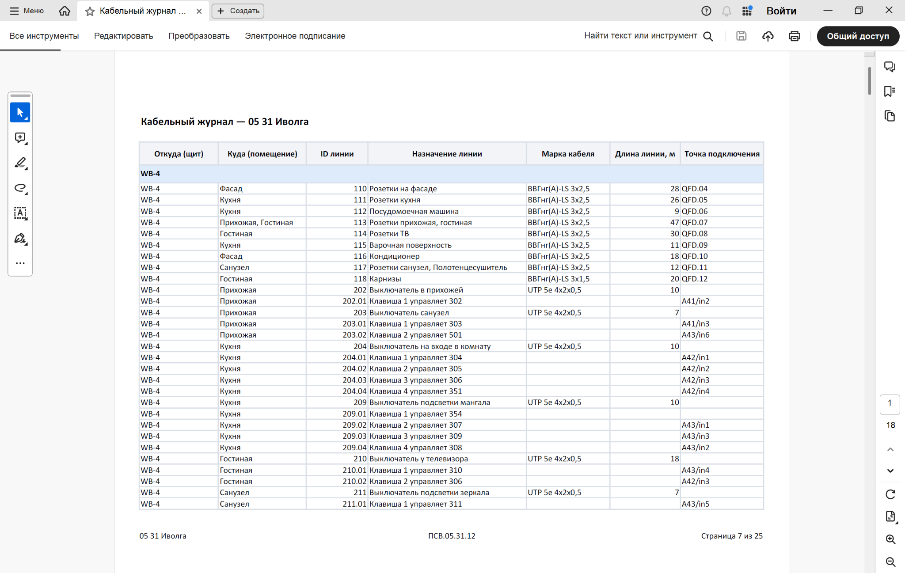
Печатный вид с объектом, шифром проекта и нумерацией страниц.
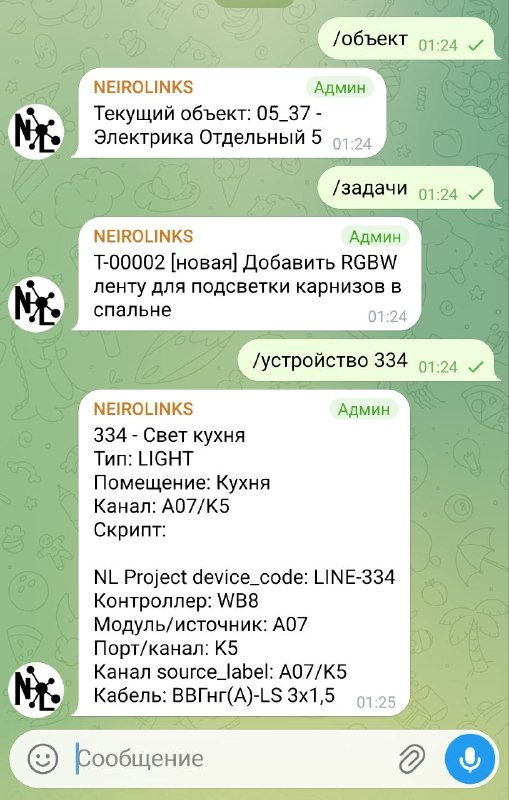
Если данные проекта собраны в модель, по ним можно задавать вопросы: что за устройство, какой канал управляет нагрузкой, какой кабель идёт на линию, в каком щите находится автомат.
Бот — не отдельная магия. Это короткий путь к проектной базе для инженера, монтажника или наладчика.
Следующий этап — не только читать проект и формировать документы, но и двигаться от модели к готовой настройке системы.
Формирование файлов щитов, блоков, атрибутов, подписей и монтажной структуры.
Подготовка конфигураций, скриптов, проверка проекта перед записью на контроллер.
Фиксация релиза проекта: документы, модель, артефакты, возможность сравнения изменений.
DWG ↔ Project ↔ контроллер: видеть, что изменилось и где требуется решение инженера.
Быстрые ответы по линиям, каналам, щитам, устройствам и задачам объекта.
Обновления, шаблоны, каталоги, обратная связь, лицензии и поддержка.
Сейчас NEIROLINKS Project используется для выстраивания собственного процесса проектирования и взаимодействия со смежниками.
Это ещё не универсальная коммерческая система для любых проектов. Это рабочий инструмент, на котором проверяется логика будущего продукта для проектирования проводных систем на Wiren Board.